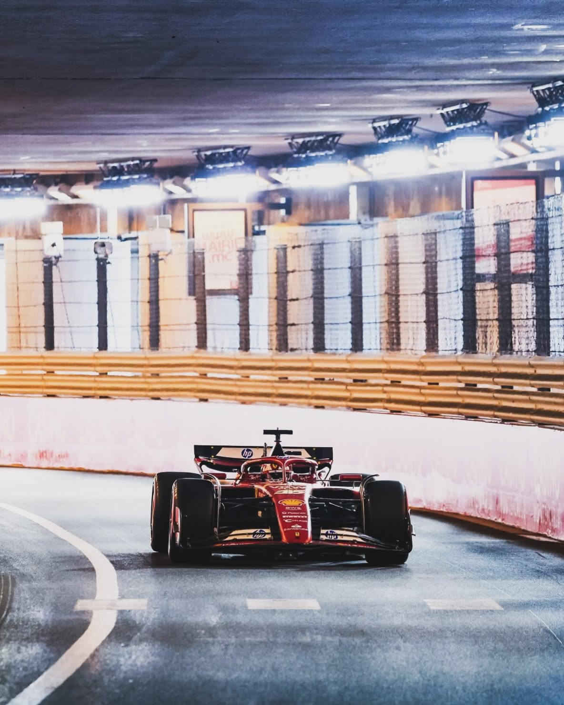

Mónaco es uno de los circuitos más especiales de la Fórmula 1 por su historia, su dificultad y su ubicación única. El Gran Premio se disputa por las calles de Montecarlo, entre edificios, el puerto y los túneles del principado, convirtiendo la ciudad en un circuito de carreras durante un fin de semana.
Su trazado es muy estrecho, con curvas lentas, cambios de elevación y escasas escapatorias. Esto hace que los pilotos tengan que rozar los muros y mantener una precisión milimétrica, ya que el más mínimo error puede provocar un accidente. Además, adelantar es extremadamente difícil, por lo que la clasificación del sábado suele ser decisiva para el resultado de la carrera.
Por último, Mónaco es una de las pruebas más emblemáticas y tradicionales del calendario. Su glamour, sus yates, sus paisajes mediterráneos y su larga historia lo convierten en una cita diferente a cualquier otra. Ganar en sus calles es uno de los grandes logros para cualquier piloto, ya que exige combinar velocidad, concentración y una enorme confianza al volante.